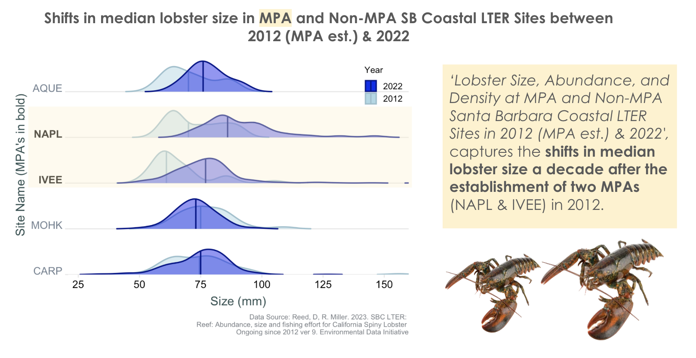
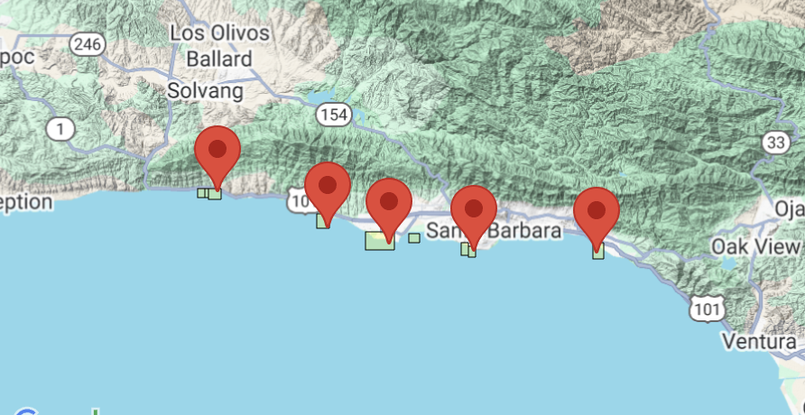

##~~~~~~~~~~~~~~~~~~~~~~~~~~~~~~~~~~~~~~~~~~~~~~~~~~~~~~~~~~~~~~~~~~~~~~~~~~~~~~
## load packages ----
##~~~~~~~~~~~~~~~~~~~~~~~~~~~~~~~~~~~~~~~~~~~~~~~~~~~~~~~~~~~~~~~~~~~~~~~~~~~~~~
library(readr)
library(tidyverse)
library(ggplot2)
library(lubridate)
library(janitor)
library(ggdist)
library(see)
library(ggridges)
##~~~~~~~~~~~~~~~~~~~~~~~~~~~~~~~~~~~~~~~~~~~~~~~~~~~~~~~~~~~~~~~~~~~~~~~~~~~~~~
## import data ----
##~~~~~~~~~~~~~~~~~~~~~~~~~~~~~~~~~~~~~~~~~~~~~~~~~~~~~~~~~~~~~~~~~~~~~~~~~~~~~~
lobster_data <- read_csv("https://portal.edirepository.org/nis/dataviewer?packageid=knb-lter-sbc.77.9&entityid=f32823fba432f58f66c06b589b7efac6")Visualizing lobster size differences across five SBC LTER sites (2012, when IVEE and NAPL were established as MPAs, and 2022).

Background / Context:
About the Data: This dataset contains two tables 1) Abundance and size data, and fishing pressure (number of trap floats)
1) Abundance and size data collected annually by divers in late summer before the start of the fishing season at five SBC LTER long term kelp forest study sites: two within MPAs (Naples and Isla Vista) and three outside (Arroyo Quemado, Mohawk and Carpinteria).
 Caption: Unlabeled spatial coverage of the five SBC LTER sites where lobster size and abundance data were collected. Two sites (NAPL and IVEE) are within Marine Protected Areas (MPAs) established in 2012, while three sites (CARP, MOHK, AQUE) are outside of MPAs.
2) Fishing pressure, as determined by counting the number of commercial trap floats. Data are collected every two to four weeks during the lobster fishing season (October to March) at nine sites along the mainland, eight of which are also SBC LTER long-term kelp forest study reefs
Data Citation:
Reed, D, R. Miller. 2023. SBC LTER: Reef: Abundance, size and fishing effort for California Spiny Lobster (Panulirus interruptus), ongoing since 2012 ver 9. Environmental Data Initiative. https://doi.org/10.6073/pasta/3595322687af94cd532620ad9db94c77.
Objective:
I want to create a visualization that explores how lobster size differs across each of the five coastal rocky reef SBC LTER sites for the years 2012 (when IVEE and NAPL were established as MPAs) and 2022 (10 years later).
Setup
basic data exploration (e.g. using str() / glimpse() / View(), looking for unique factor levels, etc.).
glimpse(lobster_data) ##look at the data
View(lobster_data)
unique(lobster_data$REPLICATE) # Just A-D
names(lobster_data) #return all column names Data wrangling
##~~~~~~~~~~~~~~~~~~~~~~~~~~~~~~~~~~~~~~~~~~~~~~~~~~~~~~~~~~~~~~~~~~~~~~~~~~~~~~
## data cleaning & wrangling ----
##~~~~~~~~~~~~~~~~~~~~~~~~~~~~~~~~~~~~~~~~~~~~~~~~~~~~~~~~~~~~~~~~~~~~~~~~~~~~~~
##########################Instructor Notes#####################################
# I love starting all my cleaning pipelines with janitor::clean_names() to convert column headers into lowercase snake_case
# keep just the years of interest. Missing size measurements are denoted with -99999 – do not want to leave those values as-is (what’s a lobster with -9999 mm carapace length?? );
# Each row is not always a single observation, but rather summed lobster counts at each size observed within a site / transect / replicate. Wrangle the data such that each row represents a single lobster observation. You may need to do some Googling to figure out a solution for this (HINT: you’re looking to perform the opposite of count()).
#I often find that I’ll need to return to my data wrangling pipeline again after I start plotting my data – it’s at this stage that I’ll often catch variables that are the wrong data type (e.g. numeric, factor, character) for plotting and need to make the appropriate updates.
############################################################################
# Wrangling Plan:
# keep years of interest
# deal with -9999 mm missing size measurements...... maybe it's best to mark as NA
# Wrangle the data such that each row represents a single lobster observation (opposite of count() )
# It looks like Year, Month, Date should probably be converted to datetime
# Transect might be factor?
#########
lobster_df <- lobster_data %>%
filter(YEAR %in% c(2012, 2022)) %>% #select years 2012 and 2022
mutate(year = year(DATE),
month = month(DATE, label = TRUE, abbr = TRUE),
day = day(DATE)) %>%
select(c(-"YEAR", -"MONTH"))
# UPDATE A FEW COLUMNS TO INTEGER VALUES
lobster_df$TRANSECT <- as.integer(lobster_df$TRANSECT)
lobster_df$COUNT <- as.integer(lobster_df$COUNT)
lobster_df$NUM_AO <- as.integer(lobster_df$NUM_AO)
lobster_df$year <- as.factor(lobster_df$year)
## deal with -9999 mm, turn to NA
lobster_df$SIZE_MM <- na_if(lobster_df$SIZE_MM, -99999)
#now, we can clean names :)
lobster_df <- lobster_df %>% janitor::clean_names()
#Wrangle the data such that each row represents a single lobster observation. I found a function upon googling called "uncount()"
lobster_df_unpacked <- lobster_df %>% uncount(weights = count)
# View the resulting dataframe
View(lobster_df_unpacked)
### CHECKING WORK
print(sum(lobster_df$count) == nrow(lobster_df_unpacked)) [1] TRUEFrom this step, I can see a few things:
My variables of interested are:
- site: character (chr)
- size_mm: numeric (num)
- year: numeric (num)It may be important to show sample size, because looking at the data, I see that the CARP site in 2022 has a bigger range in count than other sites. This may show not only stronger evidence of a change in size, but also count, possibly due to the establishment of MPAs. The design of this graphic will have to intentionally incorporate the dimensions and factors of each dimension in play – time, 5 different sites, lobster length, potential need to demonstrate sample size, etc. It will also be important to distinguish MPA’s from non-MPA’s.
Data visualization
I ended up doing the following to update my plot:
- updated axis text
- removed minor and major grid-lines
- adjusted histogram color, position
- re-centered x and y axis titles
- Got rid of trailing lines in plot
- Bolded MPA sites in Y axis, adjusted colors of individual labels
- Adjusted X axis scale breaks
- removed extra ink in plot panel and plot axis text
- Added data citation + positioned it
- set x axis limits
- adjusted line width of density plot
- Added alt text
- Adjusted all text color and size, including legend
- Added margins to the right hand side of the graph
- Took out the bottom space with coord expand = false
Presenting the visualization
I finalized my work by highlighting the key points of interest and adding graphics to enhance viewer understanding. This step could have also been done in R, but for the sake of time, I chose to do it in an image editing software!
Citation
BibTeX citation:
@online{hamilton2024,
author = {Hamilton, Flora},
title = {Visualizing Lobster Size Differences Across {MPA} {(Marine}
{Protected} {Areas)} and {Non-MPA} Sites},
date = {2024-02-03},
url = {https://floraham.github.io/Projects/2024-03-15-fire-tree-mortality/},
langid = {en}
}
For attribution, please cite this work as:
Hamilton, Flora. 2024. “Visualizing Lobster Size Differences
Across MPA (Marine Protected Areas) and Non-MPA Sites.” February
3, 2024. https://floraham.github.io/Projects/2024-03-15-fire-tree-mortality/.